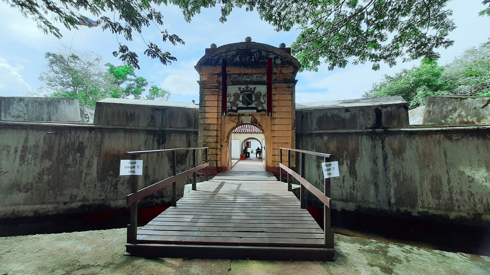

About Star Fort

The Star Fort is a fort in Matara, Sri Lanka, located on the eastern bank of the
Nilwala River, approximately 350 metres from the gate to the Matara fort.
It was constructed by the Dutch in 1765, and was originally called Redoute Van Eck.
In 1640 the Dutch completed the main fort at Matara but found it to be vulnerable from
attacks coming from land. In 1761, the Dutch were forced to flee as a result of the
Matara Rebellion, in which Sinhalese forces backed by Kandyan Kingdom attacked and took
control of the fort.
The Star Fort was built to a unique shape of a six pointed star with space for 12 large
cannons to cover approaches from all directions. The fort was built to hold a small
garrison, food supplies and enough ammunition to withstand an attack before being
re-inforced from the main fort.